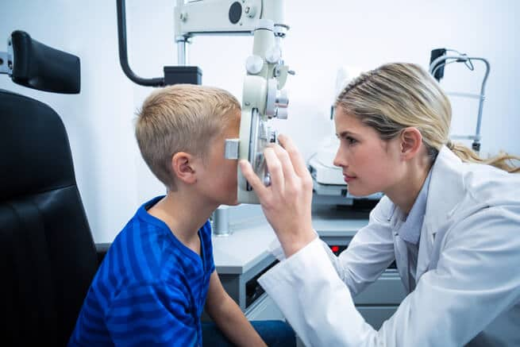

MEDICARE : Services Médicaux
Bienvenue sur Medicare
Votre nouvelle plateforme de santé en ligne !
Nous sommes ravis de vous accueillir sur Medicare, votre partenaire de confiance pour toutes vos consultations médicales et services de santé en ligne. Chez Medicare, notre mission est de rendre l'accès aux soins plus simple, rapide et efficace pour tous. Grâce à notre interface intuitive et notre vaste réseau de professionnels de santé qualifiés, vous pouvez désormais prendre rendez-vous, consulter vos résultats médicaux et obtenir des conseils de santé personnalisés en quelques clics.
Explorez dès maintenant les nombreuses fonctionnalités de Medicare et découvrez comment nous pouvons vous aider à mieux gérer votre santé au quotidien. Merci de nous faire confiance pour vos besoins médicaux. Nous sommes ici pour vous accompagner à chaque étape de votre parcours de santé.
Bienvenue chez Medicare, où votre bien-être est notre priorité.
